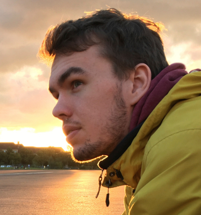

Lukas Großberger

I am a machine learning research engineer, trained in computational cognitive neuroscience, with an entrepreneurial background, who enjoys solving complex problems in interdisciplinary and international teams.
When I am not working on machine-learning algorithms, checking out new technology or building quality software, you will find me enjoying music that I play, listen or dance to, as well as cooking and eating tasty treats.
Being a person with a variety of interests, I always look for possibilities to contribute my skills and discover new perspectives.
Feel free to contact me, I'm looking forward to it.
Experience Industry
Bosch Center for Artificial Intelligence
Machine Learning Research Engineer
Autumn 2018 - Today
Development of machine learning algorithms for manufacturing, robotics, autonomous systems and IoT, as well as Machine Learning as a service solutions.
Focus: Hyperparameter optimization, meta-learning, software quality
Solexiv - Lukas Großberger & Christian Lay GbR
Founder
Spring 2011 - Summer 2018
Full stack software development (web & mobile), project management as well as hosting for more than a dozen companies and public institutions. Furthermore, leading the development of two SaaS platforms, facilitating team-oriented event organization and personnel scheduling.
Experience Research
Ernst Strüngmann Institute for Neuroscience in Cooperation with Max Planck Society
Research Intern
Autumn 2017 - Summer 2018
Unsupervised clustering of temporal patterns in high-dimensional neuronal ensembles using a novel dissimilarity measure (PLOS Computational Biology)
Supervision: F. P. Battaglia and M. Vinck
Max Planck Institute for Intelligent Systems Tübingen
Research Intern
Spring 2016 - Summer 2016
Investigating Music Imagery as a Cognitive Paradigm for Low-Cost Brain-Computer Interfaces
(Graz Brain-Computer Interface Conference 2017)
Supervision: M. R. Hohmann, J. Peters, M. Grosse-Wentrup
Education
Donders Graduate School for Cognitive Neuroscience
M.Sc. Cognitive Neuroscience
Autumn 2016 - Summer 2018
Cognitive Neuroscience Research Master
Radboud University Nijmegen, The Netherlands
Track: Perception, Action and Control
Focus: Machine Learning, Computational Cognitive Neuroscience
Technical University Darmstadt
B.Sc. Psychologie in IT (Computer Science & Psychology)
Autumn 2012 - Autumn 2016
Most inspiring classes by Constantin Rothkopf on cognitive modeling and Jan Peters on machine learning, as well as a five person, one year, agile team project on software engineering and psychological experimentation.
Additionally, two visits to the spring school Interdisciplinary College.
Contact
E-Mail: lukas {at} grossberger {dot} xyz
PGP Key: 0xDD5A1F57